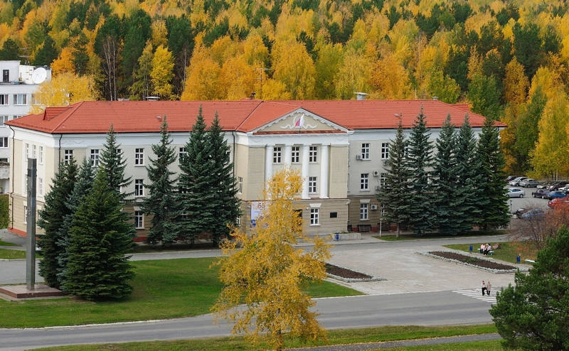

Комбинат «Электрохимприбор»
ФГУП «Комбинат «Электрохимприбор» - одно из ведущих предприятий ядерно-оружейного комплекса госкорпорации «Росатом», градообразующее предприятие города Лесного Свердловской области.
Предприятие основано 19 июня 1947 года как завод по разделению изотопов урана электромагнитным методом. Свою первую продукцию оно выпустило в 1950 году.
В 1951 году Постановлением Совета Министров СССР № 3506-1628 от 15 сентября завод переориентирован на промышленный выпуск спецбоеприпасов.
В 50-е годы был налажен полный цикл сборки и выпуска спецбоеприпасов. Многие сложнейшие технологические процессы впервые в России были поставлены на производственную основу.
60-е годы – период интенсивного развития предприятия. В 1962 году за успешное выполнение государственных заданий предприятие награждено орденом Ленина. В 1967 году заводу передано на вечное хранение Памятное красное знамя ЦК КПСС, Президиума Верховного Совета СССР, Совета Министров СССР и ВЦСПС как символ трудовой доблести коллектива.
В 70-е годы завод, наращивая выпуск продукции, осваивает серийное изготовление ряда сложнейших узлов и деталей, одним из первых в стране внедряет автоматизированную систему управления. В 1976 году предприятие преобразовано в комбинат «Электрохимприбор».
В 80-е годы комбинат «Электрохимприбор» осваивает новые виды ядерного оружия. В 1981 году предприятию присвоено звание «Коллектив высокой культуры». В 1982 году за значительный вклад в экономическое и социальное развитие Свердловской области коллектив комбината награждён Красным знаменем обкома ВЛКСМ. В 1983 году - орденом Октябрьской Революции за создание и выпуск новой спецтехники. В 1985 году в дополнение к гособоронзаказу налажен серийный выпуск продукции народно-хозяйственного назначения.
Начиная с 1990 года на комбинате «Электрохимприбор», обладающем мощным техническим и интеллектуальным потенциалом, взят курс на освоение наукоёмкой продукции. Начата деятельность по разборке и утилизации спецтехники.
В 2001 году предприятие переименовано во ФГУП «Комбинат «Электрохимприбор». Сегодня комбинат, безукоризненно выполняя гособоронзаказ, также выпускает продукцию для нефтегазового, электроэнергетического комплексов и геофизических организаций, производит медицинскую технику и обладает технологией получения 210 изотопов 47 химических элементов.